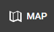

Publishing¶
This section describes the proccess of uploading and publishing QGIS project to Gisquick. It is assumed that QGIS Gisquick plugin is installed, connected to Gisquick server (see Before publishing) and project is prepared and ready to be published.
It is recommended to create a separate folder for each QGIS project and keep all files related to the project in it, because when uploading to Gisquick server, the whole folder where the QGIS project is stored is uploaded.
Once the project in QGIS is ready, click on the Gisquick plugin logo.
If the user is already connected to publication server (see QGIS Gisquick plugin),
green message pane will appear.
Otherwise, fill in the connection and Gisquick login details. Then click on Open browser.
{kind=link}
The user’s profile page opens in browser. If you have not published any projects yet, the profile page looks like this,
if you have, you will see a list of your published projects. For publishing a new project, click on NEW PROJECT.
{kind=link}
After that, an overview of the project appears. Basic information, such as QGIS project location,
map projection, units and print templates, and all layers that are about to be published
are listed in here. It is not possible to make any changes within this step.
Click the button LOAD FILES and after that, type a project’s name and hit CREATE.
Note that the project name cannot be changed later.
Note
When uploading data to GISQUICK, an entire folder with all files is uploaded. You can specify which files you don’t want to upload to the server. Use the .gisquickignore file.

The last obligatory step before publishing is setting the project’s title.
After setting the title, the project is ready to be published by clicking the button PUBLISH
in the top-right corner of Gisquick web interface. Before publishing, project is marked as
STAGED, after publishing it is marked as PUBLISHED.
Note
Project name may or may not be the same as project title. Unlike the project name, the project title can be changed in this General section of Gisquick web interface. Together with every published project, web map service (WMS) is created and can be subsequently modified.
The button  gets user to the published web map interface.
{kind=link}
See section Setting up the project for further information about all
the possible settings of a project you are publishing. These settings can be changed before the
hitting the button PUBLISH or after that.
Important
 When using flat files or file-based databases as
data stores it is highly recommended to save all the files (data and QGIS
project) in the same directory or its subdirectory. QGIS project must be
set up to use relative paths (see Project Properties). An
error warning appears otherwise (see figure below).
When using flat files or file-based databases as
data stores it is highly recommended to save all the files (data and QGIS
project) in the same directory or its subdirectory. QGIS project must be
set up to use relative paths (see Project Properties). An
error warning appears otherwise (see figure below).
When using any kind of authentication (databases, web services) it must be ensured that the server used for publishing will have access rights to such data sources.